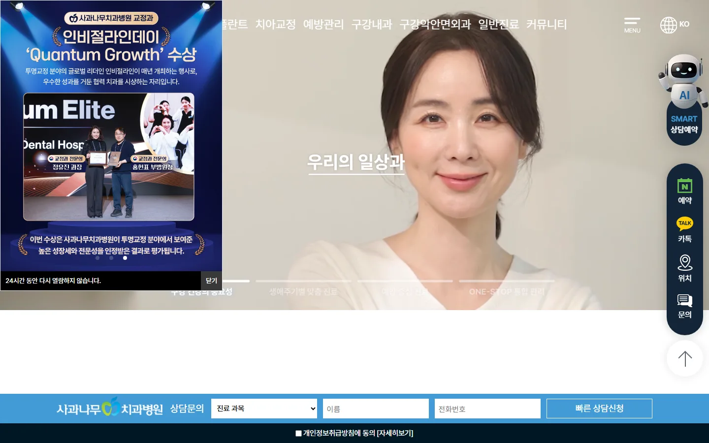
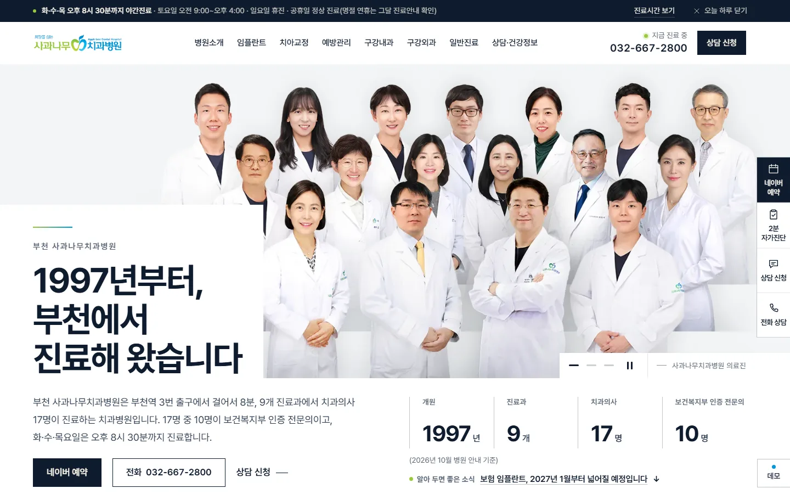
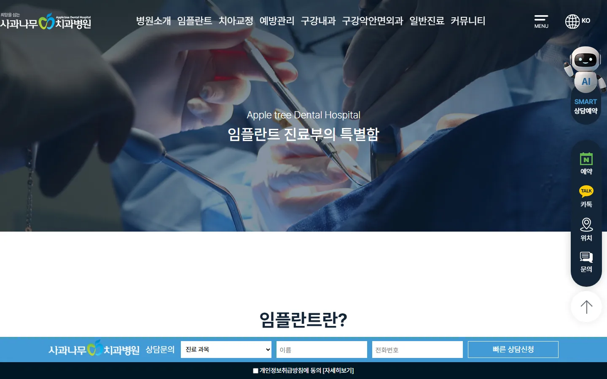
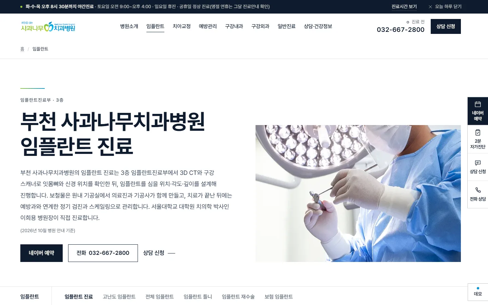
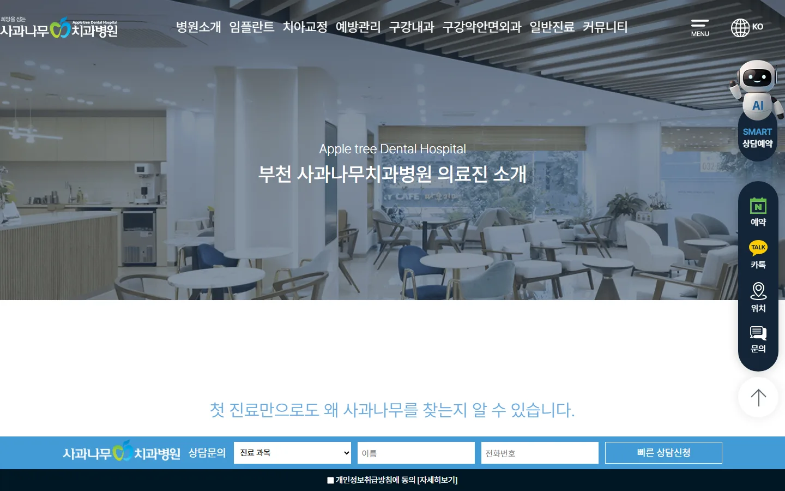
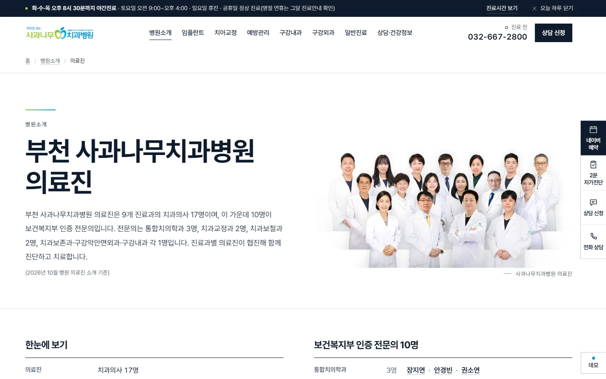
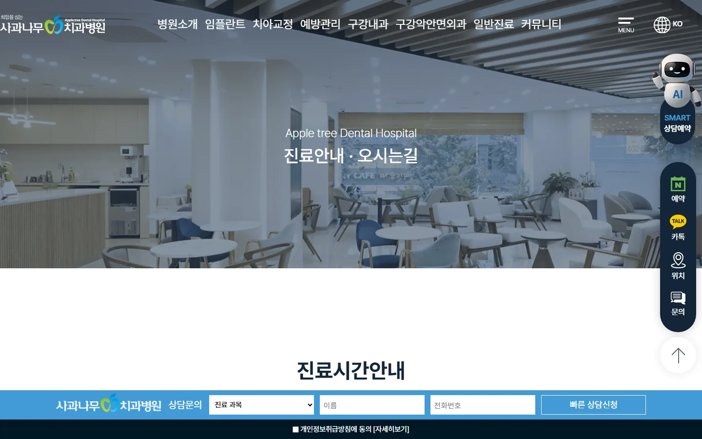
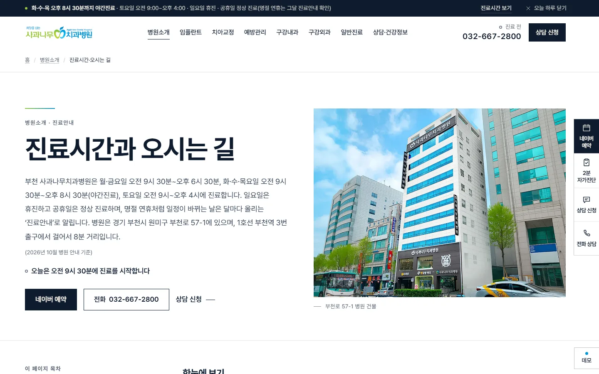
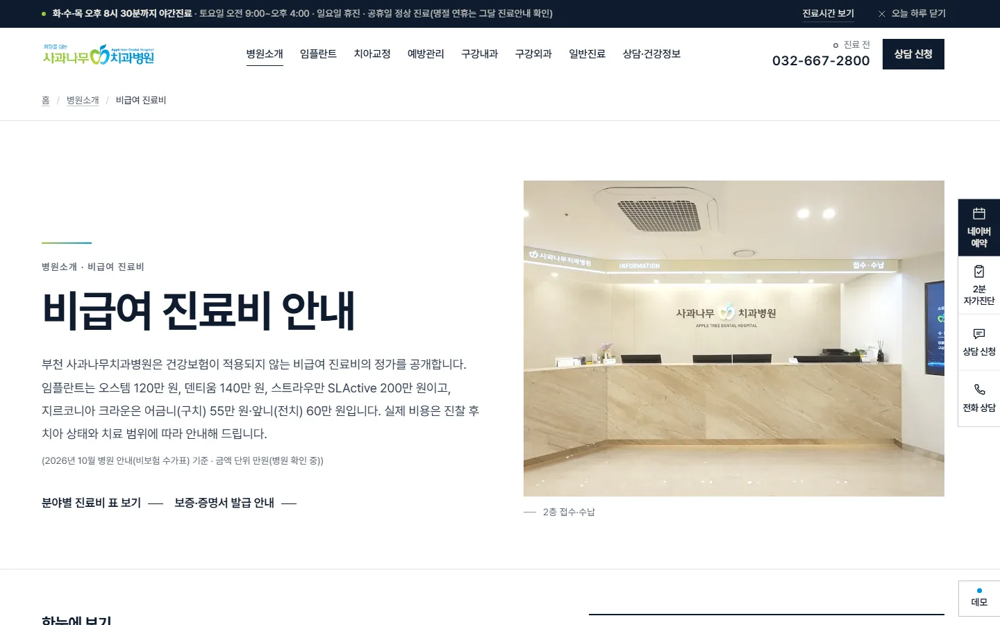
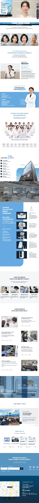

부천 사과나무치과병원 · 2026년 10월 리뉴얼 시안
기존 홈페이지와 새 홈페이지, 나란히 비교
같은 페이지를 같은 크기로 찍어 나란히 놓았습니다. 왼쪽은 지금 운영 중인 홈페이지(appledental.kr), 오른쪽은 새 홈페이지 시안입니다. 내용은 모두 병원이 이미 공개한 사실에서 가져왔고, 구조와 화면만 새로 짰습니다.
- AI 검색 준비 점수76→90그로스메이트 AEO 점검 · 100점 기준
- 질문에 바로 답하는 페이지0→20진료시간·주차·보증·보험 임플란트 등
- 의료진 개인 페이지0→17학력·경력 원문, 진료과별 보기
- 사이트맵에 실린 주소1→83검색·AI 로봇이 찾는 페이지 목록
01
홈 첫 화면


기존공지 팝업이 첫 화면을 가립니다(PC 화면의 약 21%, 휴대폰 화면의 약 55%). 병원을 소개하는 문장은 아래로 내려야 보입니다.
새 홈페이지첫 문단에 병원 위치·진료과·의료진 수·야간진료를 쓰고, 네이버 예약·전화 버튼과 핵심 숫자를 첫 화면에 둡니다. 첫 사진은 의료진 → 안내 데스크 → 진료실 순서로 바뀝니다.
02
임플란트 진료 페이지


기존하위 페이지마다 큰 배너 사진과 제목으로 시작해, 첫 화면에는 내용이 거의 없습니다.
새 홈페이지첫 화면에 '어떻게 진단하고 진행하는지'를 답하는 첫 문단과 한눈에 보기 표를 둡니다. AI 검색이 이 첫 문단을 그대로 인용할 수 있게 썼습니다.
03
의료진 소개


기존대기 공간 배너로 시작하고, 의료진 17명 경력이 한 페이지에 길게 이어집니다.
새 홈페이지'17명 중 10명이 보건복지부 인증 전문의'를 첫 문단에 쓰고, 진료과별로 골라 보거나 의사마다 개인 페이지(학력·경력 원문)로 들어갈 수 있습니다.
04
진료시간·오시는 길


기존진료시간 표는 배너 아래에 있고, 오늘 진료하는지는 표를 읽고 따져 봐야 합니다.
새 홈페이지오늘 요일 진료시간과 '지금 진료 중' 표시를 바로 보여 주고, 층별 점심시간·주차장 5곳·지하철·버스를 이어서 안내합니다.
05
비급여 진료비

기존비보험 수가표가 하나의 긴 표로 이어져, 원하는 항목을 찾으려면 끝까지 훑어야 합니다.
새 홈페이지분류 탭과 검색으로 항목을 바로 찾고, 단위·부가세 안내를 표 위에 둡니다. 검색·AI 로봇이 읽는 가격 정보도 함께 싣습니다.
06
홈 전체를 위에서 아래까지
두 홈페이지의 홈 전체를 같은 폭으로 놓았습니다. '같이 내리기'를 켜 두면 한쪽을 내릴 때 다른 쪽도 같은 비율로 내려갑니다.

07
AI 검색 준비 점수
그로스메이트의 AEO 점검(26개 항목, 100점 기준)을 두 홈페이지에 똑같이 돌렸습니다. 새 홈페이지는 병원 도메인을 연결하기 전이라, 도메인에 달린 항목(보안 연결·대표 주소)은 빼고 환산했습니다.
| 항목 | 기존 | 새 홈페이지 |
|---|---|---|
| 화면 속 자주 묻는 질문 | 0/7 | 7/7 |
| 본문 연락처·주소 | 0/4 | 4/4 |
| 구조화 데이터 | 6/9 | 9/9 |
| AI 안내 파일(llms.txt) | 0/1 | 1/1 |
| AI 로봇 허용(robots.txt) | 19/19 | 19/19 |
| 본문이 HTML 글자로 | 7/7 | 7/7 |
원본에서 직접 확인한 차이
| 항목 | 기존 | 새 홈페이지 |
|---|---|---|
| 사이트맵 | 주소 1개(홈)뿐 | 공개 페이지 83쪽 모두 |
| AI 안내 파일(llms.txt) | 없음 | 병원 정보·진료·질문 답 요약 |
| 질문 답 페이지 | 없음 | 20개 |
08
새로 생긴 것
- 2분 치아 자가진단불편한 곳 6가지 중 하나를 고르면 8~10문항으로 지금 진료가 필요한지 4단계로 알려 주고, 결과를 붙여 상담 신청까지 이어집니다.써 보기
- 질문에 바로 답하는 페이지 20개진료시간·야간진료·주차·임플란트 보증·보험 임플란트처럼 자주 묻는 질문에 첫 문단으로 바로 답합니다.보기
- 의료진 17명 개인 페이지학력·경력을 원문 그대로 싣고, 진료과별로 골라 볼 수 있습니다.보기
- 관리자 화면 17개 메뉴상담 신청 관리, 진료시간·공지 수정, 비급여, 자가진단 통계, AI 검색 노출을 한곳에서 봅니다(데모 계정 apple / demo1234).열기
- 그로스메이트 연결방문부터 상담 신청까지 어느 구간에서 손님이 빠져나가는지 측정합니다.
- 의료광고 표현 점검효과를 장담하거나 다른 병원과 견주는 표현을 자동으로 걸러, 모든 페이지에서 0건입니다.